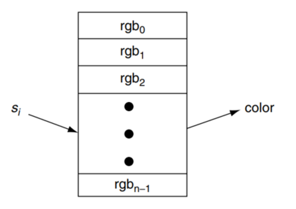
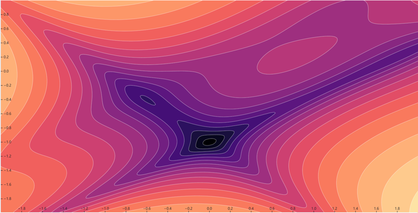
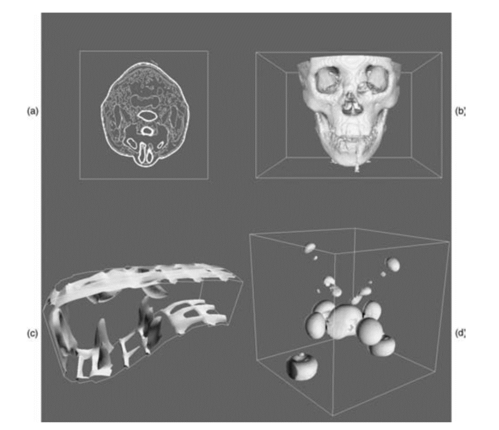
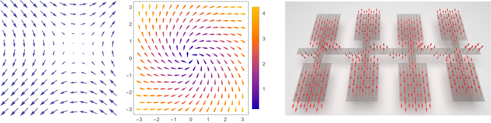
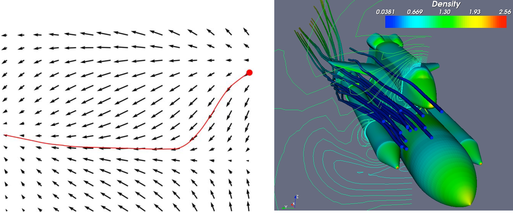
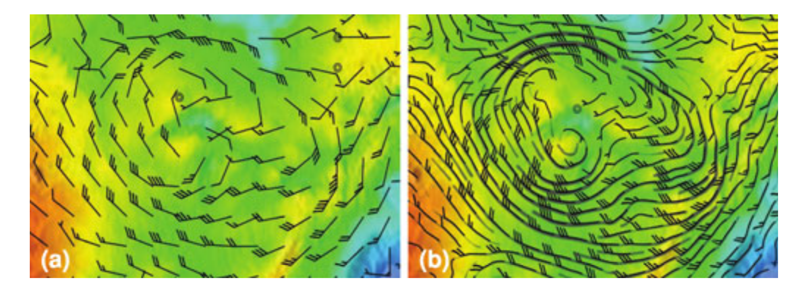
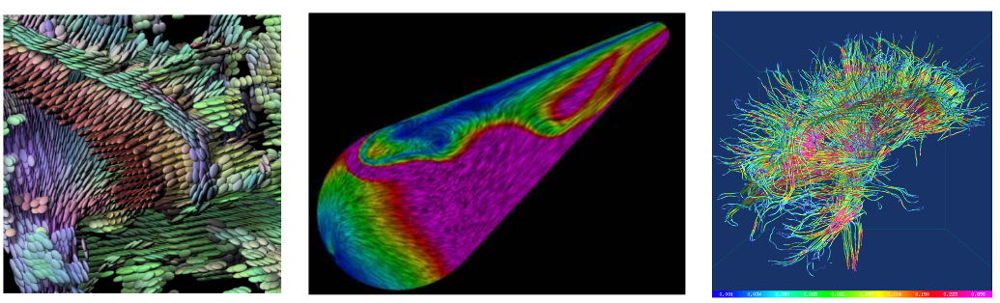

25.2. 科学可视化的类型#
科学可视化的方法体系紧密围绕数据类型构建。本节将针对标量场、矢量场、张量场及时变数据，解析其核心特性与对应的可视化技术。
25.2.1. 按数据类型分类#
25.2.1.1. 标量场可视化#
标量可视化是将分布在空间中的标量值数据转换为人类可感知的视觉形式（如颜色、等值线）的过程，以下将介绍几种经典方法。
1. 颜色映射（Color Mapping）
颜色映射将标量值通过预定义的颜色映射函数映射到颜色空间（如RGB或HSV），使用图形库的标准着色和阴影功能来显示这些颜色，并以颜色差异来表示数值差异。 颜色映射的基本定义式如下：
\(C\) 表示可视化的颜色值，\(S\) 为定义在域 \(D\) 上的标量场，\(S:D \rightarrow \mathbb{R}\) ，其中 \(D\subseteq \mathbb{R}^n\)（通常 \(n\) = 2 或 3），\(\mathbb{R}\) 表示实数集。
\(T\) 表示颜色映射函数，可以定义为：
其中 \([S_{\text{min}}, S_{\text{max}}]\) 是 \(S\) 的值域，\(\text{Colors}\) 表示一组颜色。 最终，对于所有 \(x \in D\)，都可以将 \(x\) 在域 \(D\) 中的标量值 \(S(x)\) 通过颜色映射函数 \(T\) 转换为一个颜色，从而实现可视化。
颜色映射函数通过传递函数将归一化后的标量值转换为颜色值，而颜色查找表是一种特殊形式的传递函数，如图 25.1。 基于颜色查找表是一种最直接的颜色映射方法，其流程包含如下步骤：
定义颜色查找表 查找表包含一组预定义的颜色数组（例如，红色、绿色、蓝色以及透明度分量或其他类似的表示），通常存储为RGB或RGBA，每个颜色对应一个标量范围。
标量归一化 将原始标量值\(S\)线性缩放到标准范围\([0,1]\)内，超出范围的值截断至边界：
计算索引 通过计算标量值在查找表中的索引位置计算出颜色值，从而将标量值映射到对应的颜色。 \(N\) 为查找表颜色数，则索引值 \(index\)（浮点数） 为：
颜色插值 颜色插值用于在查找表的离散颜色之间生成平滑过渡，线性插值是一种常见的插值方法。 已知 \(C_i\) 和 \(C_{i+1}\)，\(i = \lfloor index \rfloor\) 为两个相邻的颜色，插值权重 \(\alpha = index-i\)，则颜色 \(C\) 的插值公式如下：

图 25.1 颜色映射表的形式。#
2. 等高线/等值面（Contours/Isosurfaces）
颜色映射的一个自然扩展是等高线绘制。 当我们看到一个用数据值着色的表面时，眼睛常常将颜色相近的区域区分为不同的区域。 当我们绘制等高线时，实际上就是在构造这些区域之间的边界。 特定的边界可以表示为两个区域 \(F(x) < c\) 和 \(F(x) > c\) 之间的 \(n\) 维分隔面，其中 \(c\) 是等高线值，\(x\) 是数据集中的 \(n\) 维点。
绘制等高线始终是从指定定义要生成的等高线或表面的等高线值开始的。 由于实际数据多为离散采样点，如图 25.2中显示的 2D 结构化网格（数字代表网格点处的标量值），生成连续等值线/面需通过插值计算等值点位置。

图 25.2 一个简单的等值线（\(c=5\)）测绘示意图。#
最常见的插值技术是线性插值，我们沿单元格边缘定位等值点，从而确保拓扑连续性。 在二维网格单元格边缘，等值点 \(p\) 的位置由相邻顶点 \(x_1, x_2\)计算，公式如下：
其中 \(c\) 是目标等高线值，\(v_1\), \(v_2\) 是点 \(x_1\), \(x_2\) 处的标量值。
例如，如果一条边在其两个端点的标量值为10和0，并且我们试图生成值为5的等高线，则边缘插值计算等高线通过边缘的中点。一旦在单元格边缘生成了点，我们就可以将这些点连接成等高线。 把这个过程推广到一个大一点的2D温度场中，将会得到下面的等温线结果（图 25.3）。

图 25.3 2D温度场的等温线可视化。#
对于等值线的连接一种方法是使用分而治之的技术，独立处理每个单元格。这在二维中称为“行进方块算法”（Marching Squares），在三维中称为“行进立方体算法”（Marching Cubes），如图 25.4和图 25.5所示。

图 25.4 Marching Squares算法示意。#

图 25.5 Marching Cubes算法示意。#
这些技术的基本假设是，等高线只能以有限的方式通过一个单元格。拓扑状态的数量取决于单元格顶点的数量以及顶点与等高线值相对的内部/外部关系的数量。如果顶点的标量值大于等高线的标量值，则认为该顶点在等高线内部。标量值小于等高线值的顶点则被认为在等高线外部。 对于一个方形单元格，有16种组合。通过将每个顶点的状态编码为一个二进制数字，可以计算出案例表中的索引。 对于三维数据，考虑到立方体单元格中有八个点，有 \(2^8=256\) 种不同的标量值组合。但是由于旋转平移对称性可以进一步缩减案例中的数目。 由于我们这里主要讲可视化算法，关于Marching Cubes的算法流程请参考 Lorensen 等人的工作 [LC98]。
图 25.6给出了一些利用Marching Cubes算法进行重建的结果。

图 25.6 行进立方体算法的一些结果。#
25.2.1.2. 矢量场可视化#
矢量场可视化通过图形化手段表达矢量数据的方向、大小及动态特性，是流体力学、气象学、电磁学等领域的核心分析工具。以下将介绍几种经典矢量场可视化方法。
1. 箭头表示法（Arrow Plots）
对于矢量场的可视化，常见的方法是使用箭头来表示矢量的方向和大小。如图 25.7展示了一些常用的箭头和用箭头表示的矢量场。

图 25.7 常用来描述矢量场的箭头和可视化的效果。#
设 \(\mathbf{V} \) 为定义在域 \(D\) 上的矢量场，其中 \(\mathbf{V}: D \rightarrow \mathbb{R}^n\)（通常 \(n\) = 2 或 3 ），表示每个点 \(x \in D\) 的矢量值。
箭头方向对应矢量的方向，而箭头长度则是将矢量的数值大小映射到可视化中所用的一种尺度表示，通常会乘以一个缩放因子来避免过长或过短的箭头。 但需要注意的是，这个缩放因子只用于将“矢量大小”转换成“箭头长度”的可视比例，并不等同于场景的真实空间尺度。
方向: 每个箭头的方向与矢量场 \(\mathbf{V}(x)\) 在点 \(x\) 的方向一致。可以用矢量的单位向量 \(\hat{\mathbf{v}}(x) = \frac{\mathbf{V}(x)}{\|\mathbf{V}(x)\|}\) 表示，其中 \(\|\mathbf{V}(x)\|\) 是矢量的大小（模长）。
长度: 箭头的长度通常与矢量的大小成比例。可以定义为 \(L(x) = k \cdot \|\mathbf{V}(x)\|\)，其中 \(k\) 是缩放因子。
最终，矢量场的可视化 \(\mathbf{U}\) 可以表示为一组箭头，其中每个箭头的位置、方向和长度由 \(\mathbf{x}\)、\(\hat{\mathbf{v}}(x)\) 和 \(L(x)\) 决定。这可以表示为 \(\mathbf{U}(x) = (\text{position: } \mathbf{x}, \text{direction: } \hat{\mathbf{v}}(x), \text{length: } L(x))\)。
2. 流线可视化（Streamline Visualization）
在科学可视化中，流线（Streamlines）是用于表达稳态矢量场流动模式的重要工具。流线通过追踪虚拟粒子在某一固定时间点的速度方向，生成连续积分曲线，来反映该时刻的流动趋势。 设 \(\mathbf{V}(x, t)\) 为定义在域 \(D\) 上随时间变化的矢量场（时变矢量场），其中 \(x \in D\) 和 \(t\) 分别表示空间位置和时间。 流线 \(\mathbf{F}(s)\) 即为在特定时间点 \(t_0\) 沿着矢量场的方向积分得到的曲线，可以定义为满足以下常微分方程的路径：
其中 \(s\) 是沿着流线的参数。\(\mathbf{F}(s)\) 是流线上点的位置。 \(\frac{d\mathbf{F}(s)}{ds}\) 表示流线上点位置关于参数 \(s\) 的变化率，这个变化率与矢量场 \(\mathbf{V}\) 在该点的值相等。
为了构建流线，我们需要选择一个初始点 \(\mathbf{F}(s_0)\) 并积分上述方程。 这可以通过数值方法实现，如欧拉方法或龙格-库塔方法。 前者是一阶近似，计算快但精度低；后者有四阶精度，稳定性高，广泛应用于工程仿真。 流线可视化在流体动力学、气象学和海洋学等领域中非常有用，它们帮助揭示流体流动的模式和结构。
需要区分的是，流线可以用来表示特定时间点的流动特性（如图 25.8。），但不应用于展示流体随时间的实际运动路径。

图 25.8 流线描述动态矢量场的效果。#
对于时变矢量场，通常使用其他方法路来展示随时间变化的流动：
路径线（Pathlines）：追踪单个粒子随时间推移的实际运动轨迹，满足：
踪迹线（Streaklines）：显示所有在某一时刻通过某一点的粒子轨迹，适用于流动显示（如烟雾实验）。
其他的矢量场可视化方法有：流动纹理合成 (Line Integral Convolution，LIC)，流拓扑可视化 (Flow Topology Visualization)，粒子系统 (Particle-based Methods)等，如图 25.9 所示。

图 25.9 Jarke J. van Wijk, Image Based Flow Visualization ©http://www.win.tue.nl/~vanwijk/ibfv/#
单纯的数据属性不同需要采用不同的可视化方法。在实际应用中，标量场也常与矢量场一起，被用来表述具有多类型数据的空间信息。 一个常见的组合是天气预报时的温度场和风场，如图 25.10。

25.2.1.3. 张量场可视化#
张量场可视化是一种将复杂的多维数据转换成直观图形的技术，广泛应用于材料科学、医学成像（如扩散张量成像DTI）、地球物理学等领域。 因为张量本身并不直观，所以张量可视化会采取一些已存在的局部基元特征来体现空间分布的张量信息。以下是三种常见的张量可视化方案：
1. 基于图元的可视化（Glyph-based Visualization）
此类方法通过几何形状（Glyph）的方向、大小和形状来编码张量的各向异性特性，常见图元包括箭头、椭球、圆柱、超二次曲面等。
椭球体：将对称正定张量分解为三个主方向和相应长度（特征值）后，绘制椭球体；椭球轴的方向与张量主方向一致，轴长与特征值大小相关。
圆柱：用于扩散张量成像（DTI），圆柱长轴方向为纤维主扩散方向，直径反映扩散各向异性指数。
盒状符号：以一个长方体来表示三个正交特征方向，长宽高对应特征值。
基于图元的可视化可以直观表达局部张量特性，但是在高密度区域易产生视觉混乱。
2. 基于纹理的可视化（Texture-based Visualization）
这类方法通过在空间中铺设或合成规则或随机的纹理图案(如线条、条带、噪声纹理)，并根据张量的大小、方向或不变量等信息，调节相应纹理的“密度、形状、取向、颜色”等视觉特征，从而在整个区域内连续地渲染张量分布。 纹理可视化具有以下核心特点：
全局连续性：纹理覆盖整个数据区域，避免基于离散图元的视觉碎片化。
方向编码：纹理走向与张量主方向对齐（如条纹沿主方向延伸）。
各向异性表达：纹理密度或对比度反映各向异性程度（高各向异性区域纹理更密集/高对比）。
多属性融合：颜色映射可叠加其他标量属性（如FA值、应力大小）。
此类方法适用于大范围平滑张量场，具有很高的视觉连续性和表达精度，但是需要生成全局纹理，因此产生较大的计算开销。
3. 超流线（Hyperstreamlines）
在矢量场中，流线体现局部向量方向。而在张量场中，如果我们将主方向之一当作“流动方向”，沿该方向跟踪曲线，并在垂直平面内用椭圆或其他形变展现张量在该点的其他主值和主方向，就得到超流线。 超流线同时保留空间走向（第一主方向）与局部张量形态（其他特征方向），在一条曲线上把张量随空间变化的特征“画出来”，从而能够提供空间上的直观感知，使观察者能够从不同角度观察和分析数据。 具体来说，超流线有以下三个特点：
主方向：对称张量有三个特征值/特征向量：\(\lambda_1 \ge \lambda_2 \ge \lambda_3\)，对应三个主方向 \(\mathbf{e_1}\)，\(\mathbf{e_2}\)，\(\mathbf{e_3}\)，超流线通常沿最大特征值方向 \(\mathbf{e_1}\) 追踪。
局部截面：沿着曲线的每一采样点，生成一个截面，并在截面上用椭圆(或其他形状) 表示 \(\lambda_2\)， \(\lambda_3\) 的相对大小和方向。
曲线积分：在坐标空间中，以 \(\mathbf{e_1}(x)\) 作为导向向量场，数值积分出曲线 \(\mathbf{x}(s)\)，从而得到超流线主体走向。
超流线多应用在应力张量可视化中以进行材料断裂分析，或用于展示扩散张量场的各向异性传播。 该方法可以同时表达主方向趋势与横截面特性，但是需要面临三维空间中视觉遮挡的挑战。
每种类型的方法都有其特定的应用场景和优势，选择哪一种取决于要可视化的数据类型和需要强调的数据特征。例如，图元适合强调数据点的局部特征，而纹理和超流线则更适合展示数据的整体流动和结构。图 25.11 和 图 25.12 给出相应的张量可视化效果。

图 25.11 通过箭头来可视化核磁共振图像。#

图 25.12 三种张量可视化的例子图。#
25.2.2. 按数据表示形式分类#
在前面对标量场、矢量场、张量场的可视化方法进行介绍时，我们主要是根据数据本身的属性（标量、矢量、张量）来区分可视化类型。然而在实际应用中，数据还可能以不同的几何形式呈现在空间中，例如： 某些数据仅限定在诸如曲面、地形、CAD模型边界等“表面”上，需要进行表面可视化。 更多时候，数据分布在三维体内部，如医学成像的CT或MRI扫描结果、流体模拟的3D网格数据等，这些数据往往需要体积可视化技术才能揭示其内部结构。 因此我们继续探讨“表面数据”和“体数据”在可视化时所采用的不同技术。
25.2.2.1. 表面可视化#
表面可视化通过几何网格（如三角面片、NURBS曲面）表达物体的边界或等值面，聚焦于几何形状与表面属性的展示。
1. 网格渲染（Mesh Rendering）
网格渲染通过将几何面片（如三角形、四边形）与光照、纹理结合，生成逼真的表面图像。这一过程包含三个关键阶段：
几何处理：顶点变换（模型→视图→投影空间）、面片剔除。
光栅化：将面片分解为像素片段，插值计算法线、纹理坐标。
像素着色：应用Phong光照模型与纹理映射，计算最终颜色。
此类可视化方法支持高效实时渲染，以及复杂几何交互（如旋转、剖切），但是仅能表达表面，无法展示内部结构，因此常用于机械零件CAD模型审查（图1a）及地质地形表面渲染（数字高程模型+卫星纹理）。
2. 表面纹理映射（Surface Texture Mapping）
与“纹理合成”思想相似，可在表面上铺设或合成纹理图案，用纹理的颜色、透明度或条带方向来编码数据。适合在曲面上表现一些局部或细腻的数据结构，如应力分布、流动形态等。 该方法技术核心有以下两点：
纹理坐标：每个网格顶点可关联纹理坐标 (u, v)，然后把标量或矢量信息转换为纹理像素，再在着色阶段将纹理“贴”到曲面上。
属性叠加：可将纹理与颜色映射或光照效果结合，在曲面的某些区域高亮显示关键信息，或通过透明度揭示下层结构。
25.2.2.2. 体积可视化#
当数据不只存在于表面，而是填充整个三维区域（如 CT/MRI 体扫描、流体模拟的立体网格），则需要用体积可视化技术来展示体内部的信息。以下介绍两种经典方法：直接体绘制与等值面提取。
1. 直接体绘制（Direct Volume Rendering, DVR）
直接体绘制无需先将体数据转化为表面，而是通过对体数据进行逐像素或逐射线的光线跟踪，将3D体内部的“密度”或“标量值”映射为颜色和透明度，再投影到屏幕上，形成半透明的可视化效果。 该方法技术核心有以下两点：
传递函数 传递函数是核心，用于将标量值 \(\theta (x)\) 转换为颜色与不透明度，从而突出感兴趣的数值范围（如医学中突出骨骼、血管等）：
\[ (R,G,B,\alpha) = T(\theta (x)). \](visualization-scientific-dvr_function)

图 25.13 左图：使用 3D 等值面来可视化标量场，右图：对于生物组织的体渲染。#
2. 等值面提取（Isosurface Extraction）
等值面提取指从体数据中提取特定标量值 \(c\) 对应的表面网格。这与前面“标量场可视化”中的等高线与等值面类似，只不过这里是在三维体数据中运用。 最经典的方法是Marching Cubes 算法，前文已有介绍，此处不再赘述。
图 25.13展示了使用 3D 等值面来可视化标量场的结果以及对于生物组织的体渲染结果。 表表 25.1 总结了表面可视化和体积可视化的差异。
特性 |
表面可视化 |
体积可视化 |
|---|---|---|
数据类型 |
通常是二维或三维表面 |
三维体积数据 |
表示方法 |
边界和表面 |
整个数据体 |
细节展示 |
局部细节，如边缘 |
整体结构和内部细节 |
应用场景 |
工程设计，地形图 |
医学成像，科学模拟 |
可视化技术 |
网格，NURBS |
体绘制，体素渲染 |
科学可视化的类型与方法紧密绑定于数据特性。标量场依赖颜色映射与体绘制，矢量场通过流线与纹理揭示动态模式，张量场借助超流形与纤维追踪解析各向异性，表面与体数据则分别聚焦几何与体渲染。 如何选择合适的可视化工具需结合科学问题与数据规模，在未来，科学可视化的趋势将向自动化、实时化与跨模态融合演进。